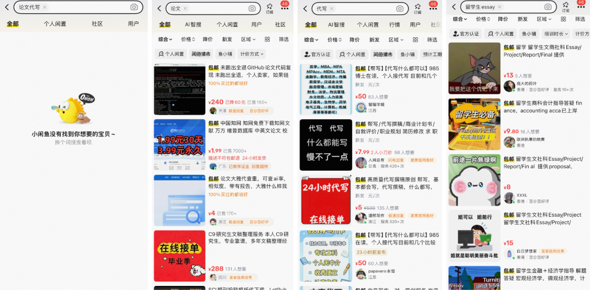
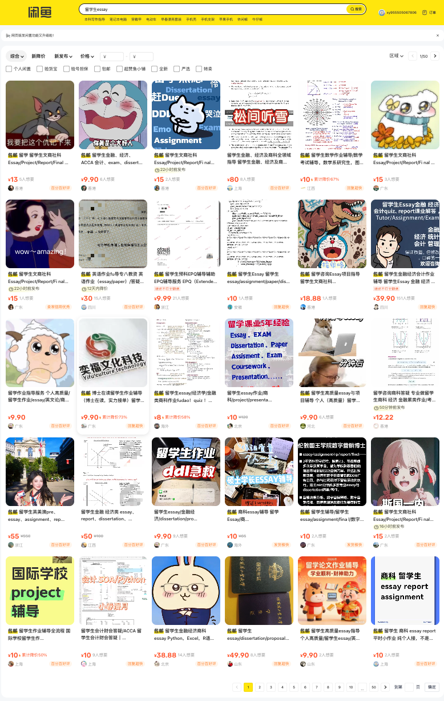

*L, a 23-year-old graduate student at Macau University of Science and Technology, never intended to be an academic ghostwriter, a “gun for hire” who writes essays for students willing to pay.
He had started a small side business on the Chinese social media platform Xiaohongshu and the secondhand e-commerce platform Goofish, offering interview coaching and personal statement and curriculum vitae polishing services to mainland students hoping to study overseas.
His fee was about 400 yuan per session.
But after one interview coaching session, a private message from a client led him, for the first time, to cross the line into ghostwriting.
“They felt my interview coaching was pretty good, so they asked if I'd be willing to take their essay and write it for them,” L recalled. It was a 1200-word coursework assignment for a British university. L charged 800 yuan for the service.
"I had never written for anyone else before. I didn't know what a fair price was. I took the job simply because they were paying."L, graduate student, Macau University of Science and Technology
It was L's first commission. It was also his last.
He knew nothing about what British universities required.
He had no idea what form a 1,200-word coursework essay should take, what formatting it demanded, or what citation standards applied.
L had done his undergraduate studies on the mainland and had only been in Macau for several months.
Still adjusting to his new academic environment, he was himself unfamiliar with the assignment formats and expectations of overseas universities — writing for someone else, under those conditions, felt beyond him.
“I can mess up my own formatting. I can't even get my own work right — and am I supposed to do it for someone else?” There was a trace of self-deprecation in his voice.
He recalled his first assignment after coming to Macau for his master’s degree.
The instructor’s comment read, “Your logical structure is fine, but the formatting doesn’t follow APA at all,” and it dragged what could have been an A minus down to a B plus. He was afraid of messing it up—and even more afraid that if he did, the other party would come after him. Out of both caution and conscience, he never took another order after that.
But in providing such ghostwriting services, some people are far bolder—and they make far more money, too.
L was only one participant in a vast industry.
Across mainland China, many vendors offer ghostwriting services. They are active on social media platforms such as Xiaohongshu and WeChat, and can also be found on Goofish, the secondhand trading platform.
Their clients include not only university students studying in mainland China, but also Chinese international students overseas, as these services have expanded beyond the border.
Take Hong Kong as an example. According to the academic integrity policy of Hong Kong Baptist University, ghostwriting is classified as a form of academic dishonesty. It refers to having someone perform academic work—either partially or in full—on a student’s behalf.
Essay and paper mills, meanwhile, involve purchasing or downloading ready-made or machine-generated assignments.
All eight publicly funded universities in Hong Kong adopt a zero-tolerance policy toward academic dishonesty, and half of them explicitly state that ghostwriting is prohibited in their academic integrity policy.
These universities are The University of Hong Kong, The Hong Kong University of Science and Technology, Hong Kong Polytechnic University, and Hong Kong Baptist University.
Students found to have commissioned ghostwritten papers or to have plagiarised may face failing grades, and in some cases may even be expelled.
Many mainland Chinese students who go abroad to study often struggle with language and an unfamiliar academic system, and some end up paying others to do the writing for them.
“From a market perspective, demand inevitably gives rise to supply. Therefore, holding other factors constant, more students mean more ghostwriting services,” said Stella Liang Shuyu, a marketing researcher and course instructor from Hong Kong Baptist University, “This follows the logic of the market, where the invisible hand adjusts the level of supply.”
An Emerging Business
More and more mainland students have chosen to study abroad. Take Hong Kong as an example, the number of mainland students enrolling each year has grown steadily over the past five years.
According to data from Hong Kong’s University Grants Committee, the annual intake of mainland undergraduate and research postgraduate students at the city’s eight publicly funded universities has steadily increased over the past decade, reaching approximately 7,500 in the 2024–25 academic year.
Annual Intake of Mainland Undergraduate and *Research Postgraduate Students in Hong Kong
(2015–2024)
Data Source: Hong Kong University Grants Committee (UGC);* This also includes a small number of postgraduate students from taught postgraduate programs funded by UGC
The University of Hong Kong's latest figures show that around 22 per cent of their undergraduates come from the mainland, and nearly two in three taught postgraduate students are mainland Chinese.
The shift in the academic environment has brought no small degree of dislocation.
Dr. Wang Xiaoxia, who teaches in the English department at Hebei University of Economics and Business, believes that most mainland students have grown up within a test-oriented education system — gaokao, the entrance examination to universities. The system involved repetitive drilling, giving standardised answers, and a culture of using final examinations to determine everything.
“If they choose to study abroad, they need to adapt to these [overseas teaching methods and academic norms],” Wang said.
When mainland students walk into overseas universities that conduct classes entirely in English, emphasise critical thinking, and demand independent research and original argumentation, they encounter an entirely new academic language and framework of thought.
L described a similar sense of disorientation after arriving in Macau for his postgraduate studies. He struggled to adjust, whether it was studying in English—a language he was not comfortable with—or adapting to a different teaching approach and academic system.
“I feel like the professors here in Macau take academics very seriously. If you're wrong, you're wrong — don't try to argue your way out of it,” he said. He recalled once scoring just one out of ten on a quiz because he wasn’t familiar with the way things worked.
“But back in mainland China, if you’re on good terms with the teacher, you tend to get higher marks,” L added.
In his undergraduate years on the mainland, much of his assessment had been non-standardised. If a student cultivated a good relationship with a teacher in advance, the teacher might give a relatively favourable grade based on the student's general performance.
“That’s completely impossible here in Macau—you wouldn’t even dare bring it up to a professor,” L added. “They might tell you it is academic dishonesty and send you a formal accusation letter.”
To find out the extent and reasons behind students spending on ghostwriting services, the reporter conducted an anonymous questionnaire to students from mainland China currently enrolled at universities on the mainland or overseas.
Who Responded: 159 Students from Mainland China
The survey was distributed on social media platforms WeChat and Xiaohongshu, which are among China’s biggest social media channels and are popular with mainland students.
A total of 159 valid responses were collected. Respondents were primarily undergraduates between the ages of 21 and 23.
Approximately half are studying at mainland Chinese universities, around 40 per cent at universities in Hong Kong, and the remainder at institutions in the United States, the United Kingdom, Australia, and elsewhere.
Language and Culture — the Hardest Walls to Climb
Among respondents studying outside mainland China, more than 60 per cent reported experiencing significant or extreme academic pressure.
When asked about the greatest challenges of studying abroad, the phrases cited most frequently were: “insufficient English and academic writing ability”, “loneliness and psychological stress”, “differences in culture and teaching style”, and “high academic demands and heavy workload”.
Caught Between Two Ways of Thinking
Among those with overseas study experience, more than 60 per cent felt there was a conflict between the test-oriented thinking instilled on the mainland and the critical thinking required by foreign universities. Only two respondents said there was “no conflict at all”.
Respondent Demographics: Survey on Essay Ghostwriting
Analysis of 159 participants from university channels
Survey distributed via WeChat and Xiaohongshu; Total valid responses: 159; Respondents were primarily undergraduates between the ages of 21 and 23.
The Biggest Challenges of Studying Abroad
% of respondents who selected each option
Valid respondents: 72 (overseas students only). Multiple responses allowed. Frequency shown as percentage of respondents.
Conflict Between Exam-Oriented Mindset & Critical Thinking
Do you feel that the mainland high-school exam mentality conflicts with overseas critical thinking requirements?
Only respondents with overseas study experience answered this question (n=72).
Different languages, different academic systems, and different cultures force newly arrived students to adapt to an entirely new way of thinking—while absorbing the gap between expectation and reality, along with the anxiety that comes with it. And these feelings of displacement have become the fertile ground on which the ghostwriting market takes root and grows.
In the reporter's survey, 98.1 per cent of the 159 respondents said they had “heard of” or “seen” ghostwriting and essay mill services. Only three respondents selected the “never heard of” option.
The proportion of overseas students who “frequently see” related advertisements was also higher than among students studying within mainland China.
Overall, everyday social media platforms such as Xiaohongshu and WeChat were mentioned most frequently as the main channels through which ghostwriting advertisements and related information are circulated.
Moreover, the penetration of these advertisements is not confined to online social media but extends into public areas. One mainland respondent noted in the open-ended section of the questionnaire that they had seen ghostwriting flyers posted “on the bathroom walls of academic buildings”.
Among mainland-enrolled respondents, Xiaohongshu was cited most often as the platform on which they had encountered such information; among overseas respondents, WeChat edged slightly ahead.
Percentage of People Exposed to Ghostwriting Information on Different Platforms (%)
Students studying in mainland China vs. overseas universities
Illustrative sample data shown for comparative analysis based on 159 respondents total. Bars show approximate % of each group who selected the platform.
Many vendors use WeChat—China’s largest social media platform by user base—to push their “services” to a wider pool of potential clients. Constrained by content moderation on domestic platforms, many ghostwriting vendors disguise themselves as students to infiltrate WeChat groups for overseas Chinese students, while others cloak themselves in the veneer of “legitimate business”, presenting as services that “assist with academic journal publication”, in order to solicit ghostwriting commissions.
The reporter found on an online search that some ghostwriting agency operators infiltrated in WeChat groups composed primarily of mainland students, waiting for the right moment to add individuals as WeChat contacts under the guise of being fellow students, and then using private messages and Moments posts to pitch their services.
The survey also found that Instagram is an important social media platform through which overseas student respondents encounter ghostwriting agencies' promotional content. Nearly 40 per cent of respondents reported seeing related information or promotional advertisements on the platform. Among mainland student respondents, not a single person reported encountering such content on Instagram.
Instagram is not accessible on the Chinese mainland but it could be overcome by climbing the firewall. It is a platform many overseas students use daily. The operators of ghostwriting agencies are clearly aware of this and have adjusted their placement strategy accordingly.
Kira Zhang, 19, a student at Emerson College in the United States, has received as many as seven Instagram friend requests in a single week from ghostwriting accounts. Nearly all of the accounts operated in Chinese and explicitly identified themselves as providing ghostwriting services.
She believes this is connected to Instagram's recommendation algorithm: it identified her as a "Chinese overseas student" and pushed her account precisely toward these agencies.
From the perspective of a service provider, L said that while platforms like Xiaohongshu are good for drawing in traffic, actual transactions are rare there. A large volume of business takes place on Goofish, the mainland secondhand trading platform.
“From what I understand, the people who come through Goofish have a much higher willingness to spend,” he said, “Clients who actually pay me come overwhelmingly from Goofish rather than Xiaohongshu.”
Unlike other open platforms on the mainland, Goofish's monitoring of ghostwriting content is considerably more lax.
The reporter searched terms related to ghostwriting on Goofish as of April 2026: only the phrase “论文代写” (“academic paper ghostwriting”) is blocked by the platform when entered into the search bar. Searching for “论文” (“paper”), “代写” (“ghostwriting”), or even “留学生essay” (“international student essay”) yields vendors and listings offering precisely such services.

After entering the keyword “留学生essay” in the search bar on Goofish’s web version, the reporter found that the first results page displayed 30 links to vendors, arranged in six rows with five listings per row.
The results currently span around 50 pages. Based on a rough estimate of 30 listings per page, this suggests that on Goofish alone there are approximately 1,500 vendors or service listings associated with the keyword.
This, to some extent, reflects the scale and activity of the market.

On the Goofish platform, the listed prices for products appearing in relevant searches range mostly from 5 to 100 yuan, with the highest visible price at 220 yuan.
However, these are not real prices. Actual transaction amounts are negotiated privately and are set flexibly according to word count, subject area, quality requirements, and deadline, according to Peiyu, a ghostwriter who is currently operating a ghostwriting studio targeting mainland students studying overseas.
The reporter also asked survey respondents about their understanding of ghostwriting prices. One respondent answered that pricing “varies widely depending on the level of the paper — anywhere from 2,000 to 50,000 yuan”.
Among survey respondents who had used ghostwriting services, nearly 40 per cent said a 2,000-to-3,000-word paper cost approximately 500 to 1,000 yuan.
More than 30 per cent said the price was approximately 1,000 to 2,000 yuan.
Overseas students who had used ghostwriting reported higher average prices than mainland students who had done so.
What Students Know About Prices
For a 2,000–3,000 word paper (writing time sufficient) — 159 respondents
Bars show count of respondents. One respondent noted prices range "from 2,000 to 50,000 yuan depending on the level". Overseas students who had used ghostwriting reported higher average prices than mainland students.
"Ghostwriting in Chinese is half the price of overseas English-language ghostwriting," a respondent studying in Hong Kong wrote in the survey's open-ended section.
The overseas student ghostwriting business is a golden egg, and many vendors have rushed toward it.
Who Is Running This Business
Posing as a Hong Kong–based student, the reporter went undercover and contacted two ghostwriting agencies that target students in Hong Kong, Macau, and overseas.
Both were first discovered on Xiaohongshu, but due to the platform’s restrictions and content review of ghostwriting-related posts, all detailed discussions of services and pricing were conducted on WeChat.
Two Agencies, Undercover
Reporter contacted both agencies posing as a Hong Kong-based student originally from the mainland China.
Peiyu's Ghostwriting Studio
A small personal team — described as "all seniors and graduates with master's or doctoral degrees from prestigious institutions", with local teachers in Hong Kong on offer. Active on Xiaohongshu, WeChat, and Goofish.
Specialises in: Essay and report writing, presentation scripts, PowerPoint slides.
Lumi Education
A more "formal" operation. Claims to cover 1,278 universities worldwide, with more than 9,071 instructors holding master's or doctoral degrees from QS Top 100 institutions. Markets itself as offering "course tutoring and essay polishing".
Reporter was assigned to "Teacher Xingxing", introduced as "a specialist of Hong Kong Baptist University" — who could name courses by code alone.
The first agency is a ghostwriting studio that operates on Xiaohongshu under the name “Reliable Senior Qianqian”. After contacting the account via direct message, the reporter added the person on WeChat, where the contact’s display name appeared as “Peiyu”.
Peiyu’s studio currently specialises in ghostwriting services for overseas students, including essay and report writing, as well as the drafting of presentation scripts and the creation of PowerPoint slides. The studio maintains social media accounts on Xiaohongshu, WeChat and Goofish.
She described her team as “a small personal team — all seniors and graduates with master's or doctoral degrees from prestigious institutions, and we can arrange for local teachers in Hong Kong”.
Her written-text services are billed per thousand words: 400 to 600 yuan per thousand words for non-STEM subjects - Science, Technology, Engineering, and Mathematics- and 500 to 700 yuan per thousand words for STEM fields, which involve data analysis.
Presentations are priced by speaking duration — roughly 100 words of content per minute — at rates of 20 to 70 yuan per minute.
The exact price of both types of service fluctuates depending on the target grade and quality requirements.
A review of Peiyu’s WeChat Moments suggests that she initially focused on ghostwriting services for mainland Chinese university students. The higher per-order prices and faster payment turnaround in the overseas student market appear to have prompted her to shift toward providing ghostwriting for students studying abroad.
“International students pay so fast,” she wrote in a Moments post in January 2025. She also noted that when her studio’s writers took on domestic orders, they would be exhausted after months of work, whereas after switching to the international-student segment, they could make more than 10,000 yuan in a single week.
The reporter reviewed Peiyu’s entire WeChat Moments feed from 2022 to the present, tracing in detail her gradual transformation from an accounting undergraduate student to a professional ghostwriter.
In multiple posts, Peiyu described her ghostwriting services as a form of “entrepreneurship”. But her “entrepreneurial” journey did not initially target the essay-writing business. Instead, it moved through several stages—paid knowledge-sharing communities, training in self‑media writing, and private-traffic operations—before ultimately pivoting toward ghostwriting.
Within the ecosystem of the knowledge economy and private-domain entrepreneurship, she combined her writing skills, community resources and AI tools to build what became a scalable ghostwriting business.
From Accounting Student to Ghostwriting Studio Owner
Vendors like Peiyu, who grew from individual writers into operators, represent only one part of the supply side of this market.
Another part consists of larger operations that present themselves in a more “formal” way, such as a tutoring agency that the reporter contacted on Xiaohongshu, which operates under the name “Lumi Education”.
According to the Lumi Education website, the agency covers 1,278 universities worldwide, specialises in providing overseas students with course tutoring and essay polishing services, and has more than 9,071 instructors on its roster.
Its customer service representative said that all of these teachers hold master's or doctoral degrees from overseas QS Top 100 institutions, with verifiable backgrounds, and that instructors are matched based on the student's institution and major, with priority given to matching tutors from the same school and same program.
The reporter consulted the agency posing as a student at Hong Kong Baptist University and was assigned to a person called “Teacher Xingxing”, who introduced herself as “a specialist of Hong Kong Baptist University”.
She is familiar with this university’s curriculum. In the conversation, the reporter provided only the course code; she was able to identify the course by name and describe its specific content.
In terms of pricing, Xingxing said that a trial lesson costs 199 yuan, with subsequent lessons charged at 998 yuan per hour. If a client buys a package of five hours or more, the discounted hourly rate works out to roughly 500 to 600 yuan.
Based on an estimate that tutoring for a 2,000-word paper takes two to three hours, completing a standard course assignment would typically cost between 1,000 and 1,800 yuan.
L also described the existence of such agencies in the interview. “There’s a fairly mature industry called ‘full-process escorting’ that promises ‘high scores guaranteed’. Some students really do pay them to ‘run the whole course’ with them,” he said and paused, “But in the end, their grades still aren’t that good.”
“How would an off-campus agency know what the professor covered if they’ve never sat in on the class?” he went on, “And you actually trust the materials they give you?”
In conversations with the reporter, Xingxing stated that Lumi does not provide ghostwriting services; they only offer essay tutoring and editing.
L, however, said that many other agencies bundle study-abroad services such as course tutoring together with ghostwriting.
“It’s often tied to study-abroad consulting,” he said, “You come in through their tutoring services, and then, through these package deals, they can help you complete your assignments. Doesn’t that make it a complete chain?”
In his account, the chain can run from assistance with admissions applications to post-enrolment course tutoring and having papers written on a student’s behalf.
According to him, each link in this process can be packaged and sold as a paid service under labels such as “tutoring” or “academic coaching”.
They Know It's Wrong. So Why Do They Do It?
Most people are aware that paying for ghostwriting violates academic integrity.
In the survey, 77.7 per cent of respondents said that academic integrity was "important" or "very important”, and more than 60 per cent described the impact of ghostwriting on their own learning outcomes as “negative” or “very negative”.
Key Survey Findings: Attitudes & Behaviour
159 respondents total
Data Source: The survey with 159 respondents.
So why do so many people still choose to use ghostwriters? The reasons behind are complex and often structural.
L told the reporter that many of his classmates at his undergraduate university used ghostwriting services. He did not see it as particularly unusual.
“The school never taught us how to write,” he said, “Most people aren’t going into academia anyway. For them, writing that paper just doesn't seem necessary.”
However, Dr. Wang of Hebei University of Economics and Business did not share this view. “You can't really trust what students say,” she said.
According to her, the university where she teaches offers three courses related to writing: basic writing, academic writing, and thesis writing. Thesis supervisors also guide students on how to conduct research and build a structure.
“But they don't want to spend the time truly learning. The mentality of getting things done perfunctorily is quite strong. Hand in the assignment, the course is finished — they went through it, but it didn't sink in,” she added.
Wang earned her doctoral degree in the United States and has firsthand experience with both systems. In her view, behind this perfunctory attitude lies a deeper institutional inertia.
“In China, [the academic regulation] is not as strict as overseas,” she said, “When a student’s thesis can’t pass, sometimes the school leadership will approach the instructor and ask them to let the student through. Otherwise, the student won’t get a diploma, and it will hurt their job prospects. The students understand this, and they know the instructor will have to pass them sooner or later, so they don’t put real effort into the thesis.”
Once that lax exit collides with the rigid standards of overseas universities, the problems surface immediately.
Wang observed that for mainland students studying abroad, the first obstacle is often not the act of writing itself but the inability to understand what the assignment is actually asking.
“Back on the mainland, teachers sometimes give assignments in a sentence or two. But overseas assignment sheets are usually a full page, with detailed criteria and rubrics,” she said.
Mainland students aren't in the habit of reading things like that. They finish the paper only to discover it bears no relation to the requirements and their grade is extremely low,” Wang added.
She recalled a student she had once taught who went on to pursue further studies in the United Kingdom. On his first assignment, he received a C minus.
“He brought all his old bad habits from China with him. He didn’t know what they were actually looking for. He wrote the paper, but the grade just wasn’t there,” Wang commented.
But the friction for these students often extends beyond a mere struggle with academic adjustment. According to Liang, the educator with Baptist University, the drive for a “perfect” grade is a deeper psychological engine at play.
Compared with what she described as the “chill” attitude of Western students, Liang said students from mainland China tend to work harder and set higher expectations for themselves—whether out of a genuine love for learning or simply in pursuit of a higher GPA.
She attributed this to cultural and social pressures.
“They grow up surrounded by expectations. It’s the social environment they’re in that makes them more inclined, almost instinctively, to strive for strong, quantifiable performance on paper.”Stella Liang Shuyu, course instructor from Hong Kong Baptist University
There is also a segment of students who see ghostwriting as simply a tool — one that helps them allocate their time more efficiently toward their actual goals.
“If you're not going into academia, and you have money, just use it freely,” one respondent wrote in the open-ended section of the survey.
Another was more specific: “I think it depends on personal plans. If you're not aiming for an academic career, then you can genuinely save that time to do internships, to do things you actually want to do.”
L also acknowledged a similar line of thinking. He said that if he had decided not to pursue graduate school and had already secured a job, with only a final thesis standing in the way of making the position official, he “might indeed have turned to a ghostwriter”. “I’m just not good at this kind of work,” he said.
“But when it comes to ethics, it’s an act of dishonesty,” he added.
Respondents studying at universities in mainland China generally said they would not report classmates who use ghostwriting services.
“Better to avoid trouble”, “It brings me no benefit”, and “It could affect relationships with classmates” were among the most common reasons given in the survey.
According to Elizabeth Zou, a 22-year-old student in Beijing, even if she knew about it, she would not file a report.
“You can’t find evidence, the reporting channels aren’t convenient, and it could hurt your relationships,” she said, “And besides, even if they didn’t put in the time, they did pay money—so in a sense, that’s also a kind of investment.”
Dr Wang the academic described the reluctance to intervene as a cultural phenomenon. “That’s how Chinese people are—better to avoid trouble; they won’t get involved,” she said.
“People abroad are different. They’ll think, ‘This is wrong, this is unjust, I have to step in.’ It’s a cultural difference,” she added.
She also observed that Chinese domestic university students generally have a low sensitivity to questions of academic ethics. In Wang’s view, the existence of academic integrity rules and relatively clearer reporting mechanisms makes students in those environments considerably more attuned to the issue at overseas universities.
Kira, who attended international schools throughout her upbringing, is firmly opposed to ghostwriting.
“It's academic dishonesty. It's an internalised line I don't cross — not a constraint imposed by rules. What the school is evaluating is you, your own abilities as a student,” she said.
Most universities outside mainland China have comparable policies on ghostwriting and academic misconduct, and nearly all maintain dedicated academic integrity committees responsible for investigation and adjudication.
At Hong Kong Baptist University, for example, the academic integrity policy explicitly classifies ghostwriting as a serious form of academic misconduct. Penalties range along a graduated scale — from failing the course, to formal disciplinary notation, to suspension, and at the highest level, expulsion. Relevant violations remain in a student's permanent academic record and may affect future academic applications and professional background checks.
The institutional framework at mainland universities tends to be more flexible. According to Zou, at her university, if a student's graduation thesis is confirmed to have been ghostwritten, the most severe outcome is denial of both the degree certificate and the graduation certificate. Ghostwriting of course papers is generally handled as academic misconduct, resulting in failure of the course; in severe cases, the student may receive a formal disciplinary warning or heavier penalties.
“But expulsion is mainly for attitude problems, not for the act itself,” she added.
Currently, no law in China specifically prohibits ghostwriting academic papers.
The only relevant directive is a 2018 Ministry of Education notice calling for strict investigation of the buying, selling and ghostwriting of degree theses at higher education institutions. But this document applies primarily to degree theses, and its constraining force over everyday coursework assignments and homework is limited.
The boundaries of the institutional framework end at the text of the regulations. Beyond the text is something harder to quantify.
In the open-ended section of the 159 questionnaires, someone wrote: “If you're not going into academia and you have money, just use ghostwriting freely.”
Someone else said, “Is studying even useful anymore? As long as you graduate, that's enough.” In the person’s mind, learning has become a means to an end, and the value of learning itself is increasingly being displaced by outcome-oriented thinking.
The Spirit of Learning
Dr Wang reflected on the purpose of sending students overseas for education. She said the decision is not simply about obtaining a degree, but about personal development.
When students outsource their academic work and spend several years abroad merely accumulating credentials, she argued, the value of those qualifications is fundamentally undermined. A degree earned without genuine effort, she said, ultimately carries little meaning for either the individual or society.
"Can you expect someone who never thinks for themselves, who is always passive, to go into a work unit and be proactive and self-motivated? That's impossible. So what is the point of going abroad at all?"Dr. Wang Xiaoxia, Hebei University of Economics and Business
Liang said that what students lose when they pay someone else to do their work is not merely a grade, but something harder to recover. University, she argued, is one of the few periods in a person's life defined not by utility but by the freedom to think.
“The most important thing about those four years is learning things that seem useless,” she said — not which courses are easiest to pass, or which internships look best on a resume, but the capacity for curiosity, for independent thought, for being driven by something internal rather than external.
“Once that time passes, it doesn't come back,” she added.
Dr. Dimple Thadani, a senior lecturer at Hong Kong Baptist University who previously oversaw academic integrity investigations at the University of Nottingham Ningbo China, believes that education surrounding ghostwriting and academic integrity involves three main stages: prevention, detection, and correction. However, she argues that the initial stage—prevention—is the most critical.
“The period before an incident occurs is when a person makes a choice. We outline the consequences, and if the stakes are high enough, students will weigh the trade-offs,” she said.
As an educator, Liang believes that a teacher's values impact their students. She argues against evaluating students based on utilitarian metrics, instead demonstrating through her own demeanour that a student’s worth extends far beyond academic grades and outward achievements.
“I don't necessarily focus on the top performers. Every individual is incredibly precious in my eyes, and I want to see their unique qualities,” she said. Ultimately, Liang hopes her students realise that she sees them as vibrant, whole human beings, rather than reducing them to a set of utilitarian criteria on a piece of paper.
*Name changed at the interviewee's request.